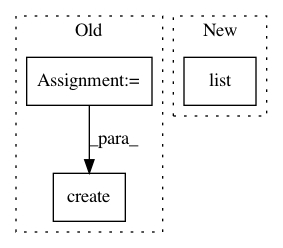

223abdede96295f7fba58a1d1e1fb63a961c33f5,iot/api-client/manager/manager.py,,create_gateway,#Any#Any#Any#Any#Any#Any#Any#Any#,573
Before Change
))
// Create the gateway
registry_name = "projects/{}/locations/{}/registries/{}".format(
project_id, cloud_region, registry_id)
with io.open(certificate_file) as f:
certificate = f.read()
if algorithm == "ES256":
certificate_format = "ES256_PEM"
else:
certificate_format = "RSA_X509_PEM"
// TODO: Auth type
device_template = {
"id": gateway_id,
"credentials": [{
"public_key": {
"format": certificate_format,
"key": certificate
}
}],
"gatewayConfig": {
"gatewayType": "GATEWAY",
"gatewayAuthMethod": "ASSOCIATION_ONLY"
}
}
devices = client.projects().locations().registries().devices()
if not exists:
res = devices.create(
parent=registry_name, body=device_template).execute()
print("Created gateway {}".format(res))
else:
After Change
client = iot_v1.DeviceManagerClient()
parent = client.registry_path(project_id, cloud_region, registry_id)
devices = list(client.list_devices(parent=parent))
for device in devices:
if device.id == gateway_id:
exists = True
In pattern: SUPERPATTERN
Frequency: 3
Non-data size: 3
Instances
Project Name: GoogleCloudPlatform/python-docs-samples
Commit Name: 223abdede96295f7fba58a1d1e1fb63a961c33f5
Time: 2019-10-09
Author: gguuss@gmail.com
File Name: iot/api-client/manager/manager.py
Class Name:
Method Name: create_gateway
Project Name: pantsbuild/pants
Commit Name: 9f356a3f1810b0ce15cd3b847080536caa12502f
Time: 2017-03-28
Author: stuhood@twitter.com
File Name: src/python/pants/engine/scheduler.py
Class Name: LocalScheduler
Method Name: __init__
Project Name: GoogleCloudPlatform/python-docs-samples
Commit Name: 223abdede96295f7fba58a1d1e1fb63a961c33f5
Time: 2019-10-09
Author: gguuss@gmail.com
File Name: iot/api-client/manager/manager.py
Class Name:
Method Name: create_device